Ciao, sono Davide
Progetto esperienze digitali dove la logica del codice incontra l'estetica del design. Come studente di Informatica e specializzando in UX/UI Design, mi dedico a colmare il divario tra complessità tecnica e facilità d'uso. Il mio approccio unisce il rigore dello sviluppo software a una profonda analisi del comportamento umano, con l'obiettivo di creare interfacce che siano funzionali, accessibili e capaci di generare valore reale.
Know-how
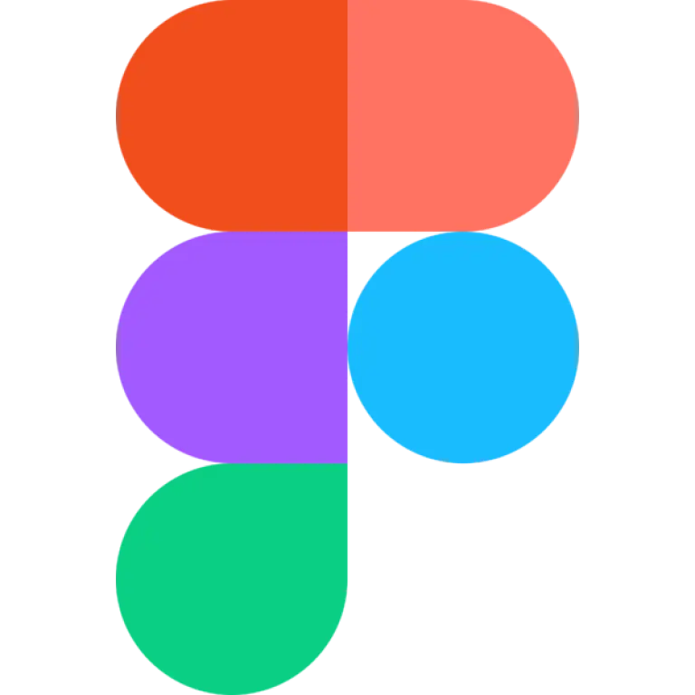
Prototipazione
Design System & High-Fidelity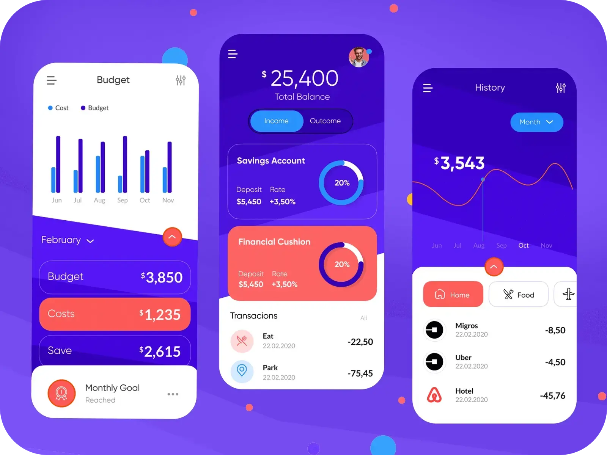
User Interface
Design Inclusivo & Accessibile
Sviluppo Web
Logica Front-end & ES6+
Architettura CSS
SASS, Bootstrap & Tailwind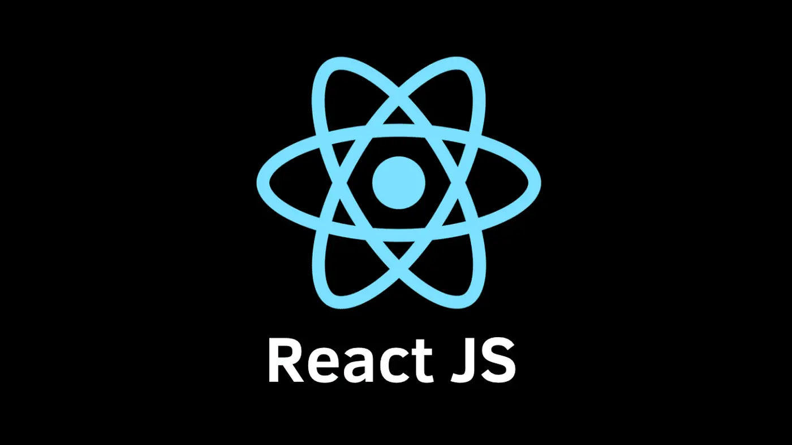
React.js
Sviluppo a Componenti
Scripting & Backend
Python & FastAPI EssentialsProgetti Selezionati
MedCloud
Sviluppo di una piattaforma web per l'ottimizzazione dei flussi sanitari. Il progetto analizza la digitalizzazione dei dati clinici, integrando robustezza backend e usabilità UI.
Analisi ProgettoIMDb Redesign
Restyling completo basato sull'analisi del comportamento utente. Dalla ricerca qualitativa ai test di usabilità, per semplificare la navigazione in database complessi.
Case Study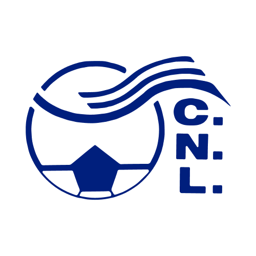
Circolo Nuoto Lucca
Consulenza tecnica e creativa per l'identità digitale dell'associazione. Gestione del restyling web e ottimizzazione dell'esperienza di iscrizione e consultazione.
Esplora Sito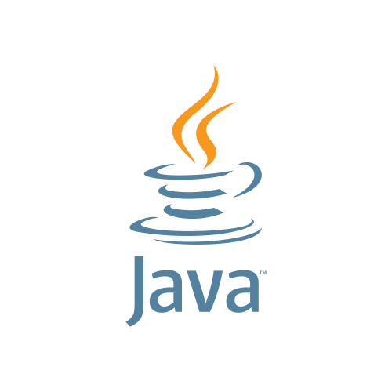
Progetto Programmazione II
Progettazione di un'architettura software complessa in Java per un prototipo di social network. Focus su programmazione orientata agli oggetti e pattern strutturali.
Repo GitHub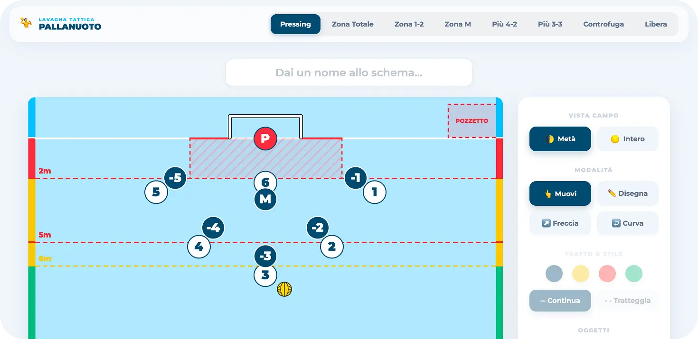
Lavagna Tattica Pallanuoto
Applicativo web custom nato per supportare gli staff tecnici nella pallanuoto. Uno strumento che traduce le necessità strategiche in un'interfaccia visiva immediata.
Esplora Tool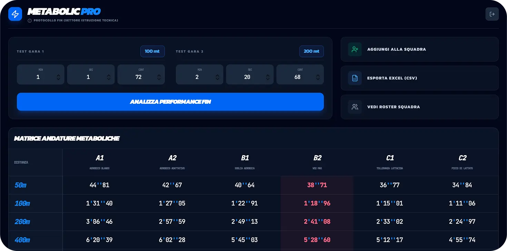
SwiMetabolic
Software di calcolo per l'analisi dei metabolismi energetici nel nuoto. Progettato per trasformare dati fisiologici complessi in insight pratici per gli allenatori.
Esplora Tool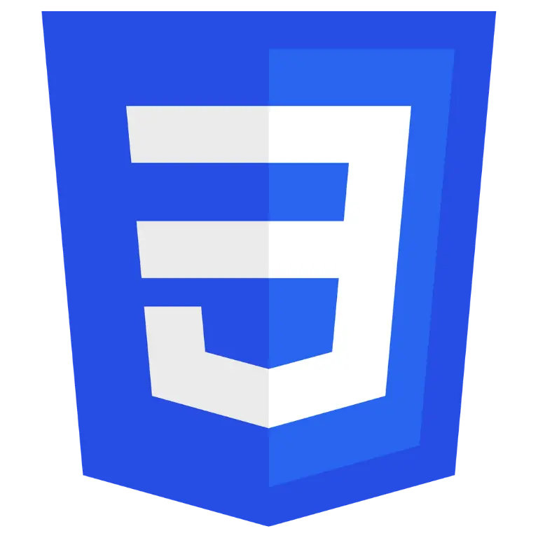
Micro-interazioni JS
Sperimentazione su logiche JavaScript per la gestione dello stato e del DOM, focalizzata sulla reattività dell'interfaccia utente in tempo reale.
Vedi Codice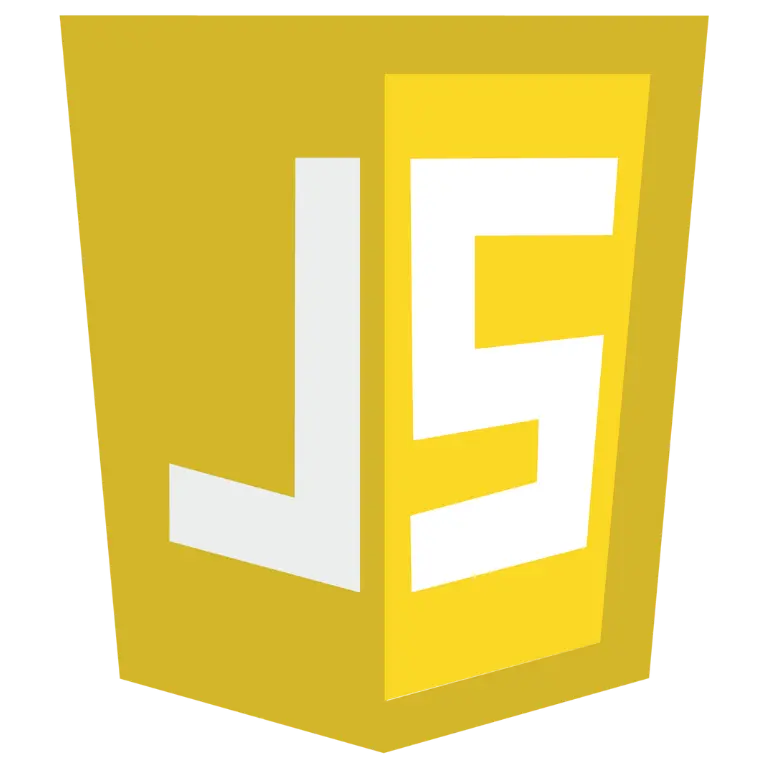
Hacker News Reader
Implementazione di un aggregatore news tech tramite consumo di API asincrone. Ottimizzazione del caricamento dati e gestione efficiente dei flussi di informazione.
Vedi Codice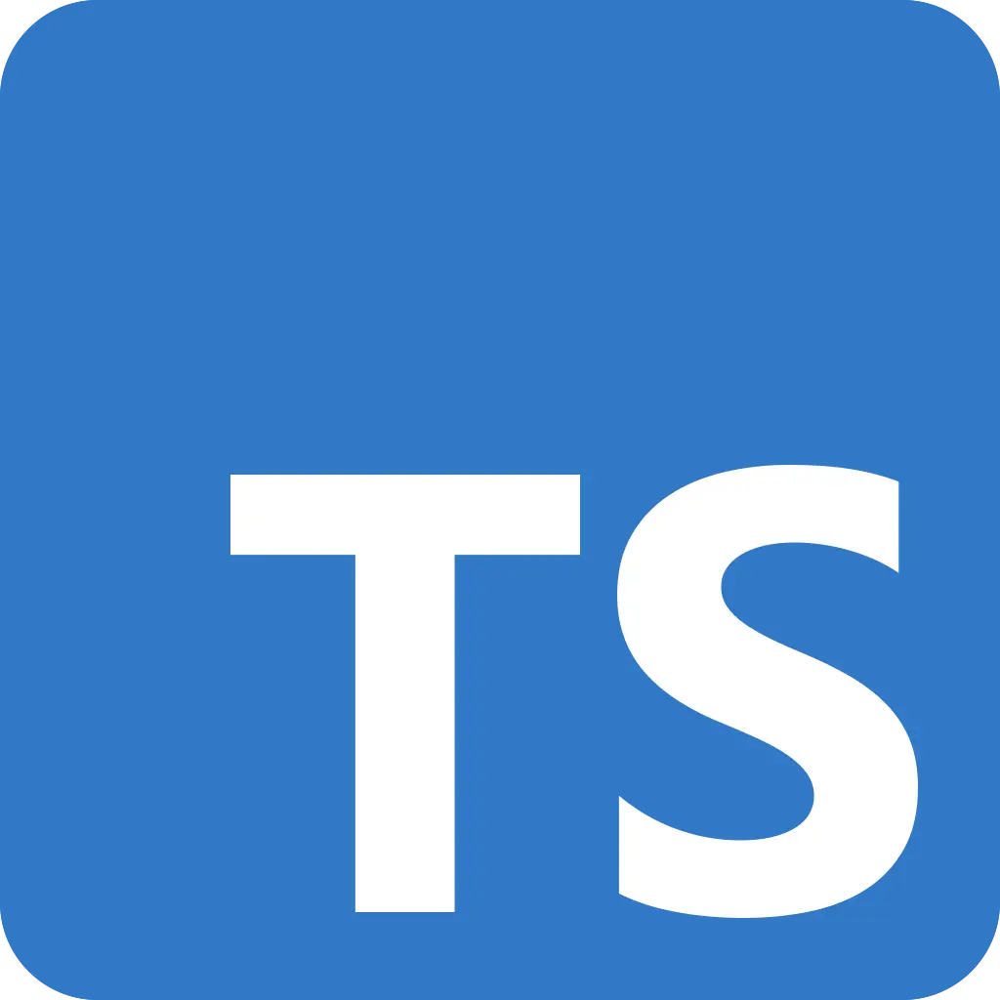
Moove Organization
Modellazione di un sistema di micromobilità urbana tramite TypeScript. Focus sulla tipizzazione forte per garantire scalabilità e manutenibilità del software.
Repo GitHub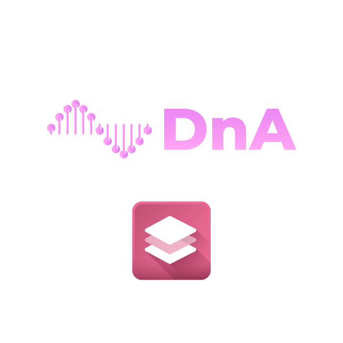
Brand & Graphic Design
Definizione di sistemi visivi coerenti. Creazione di asset grafici che integrano brand storytelling e usabilità digitale.
Case Study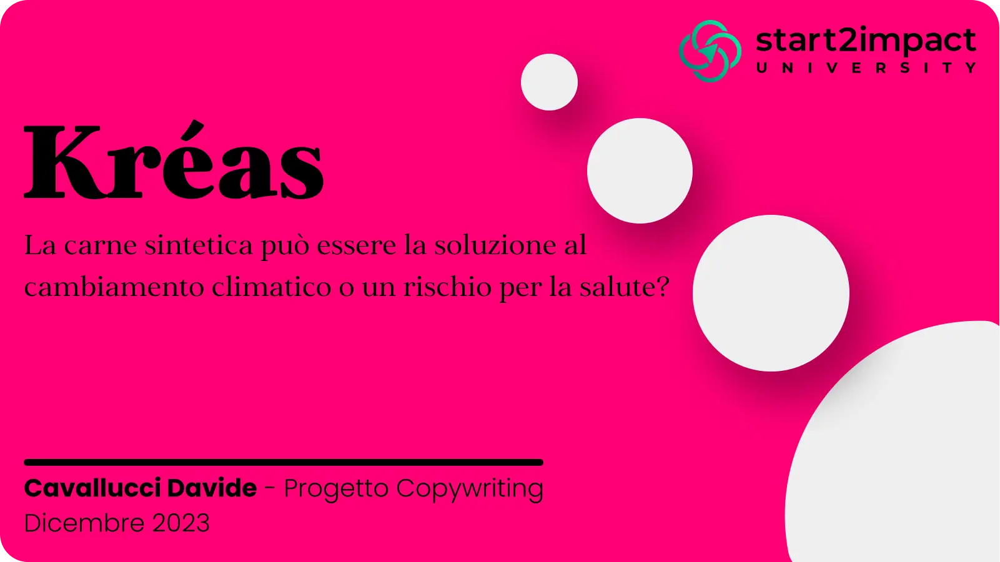
UX Writing & Storytelling
Analisi della comunicazione persuasiva. Sviluppo di micro-copy e contenuti testuali volti a guidare l'utente verso l'azione con chiarezza e trasparenza.
Vedi Progetto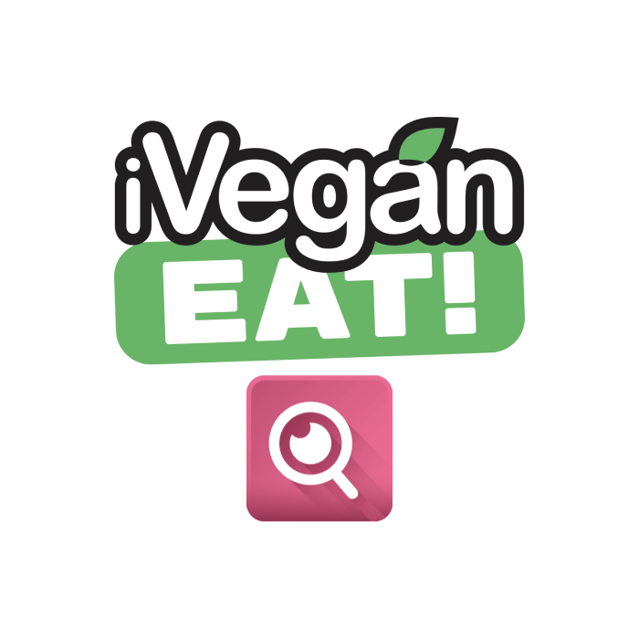
UX Discovery Process
Fase di ricerca esplorativa finalizzata alla comprensione dei bisogni reali degli stakeholder. Utilizzo di survey e interviste per validare le ipotesi di design.
Analisi Research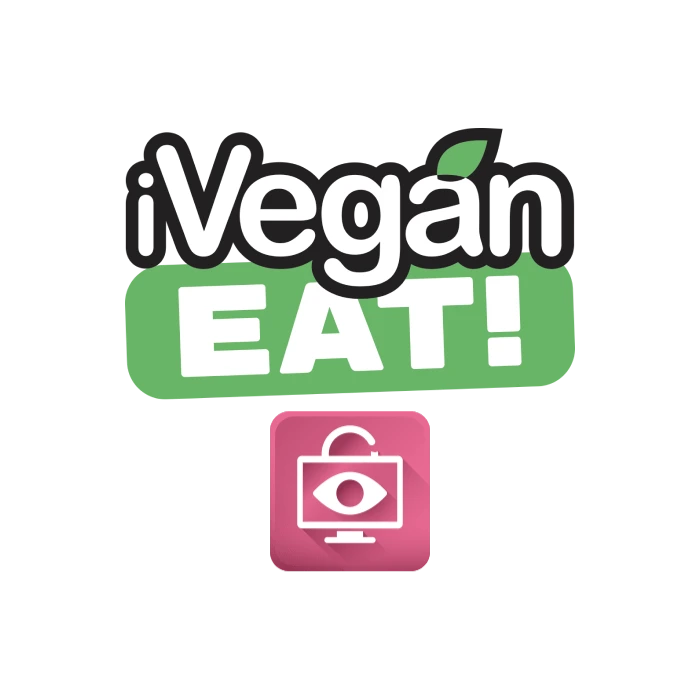
Progettazione Accessibile
Audit e ottimizzazione di interfacce digitali secondo gli standard WCAG. Garantire che il web sia uno spazio navigabile da chiunque, senza barriere.
Case StudyWireframing & Flow
Traduzione dei requisiti in strutture schematiche (Low-Fidelity). Definizione dell'ossatura del progetto prima di passare alla componente estetica.
Analisi Struttura
User Interface Design
Creazione di interfacce interattive ad alta fedeltà. Focus sulla gerarchia visiva, tipografia e sistemi di icone per un'esperienza esteticamente premium.
Prototipo HD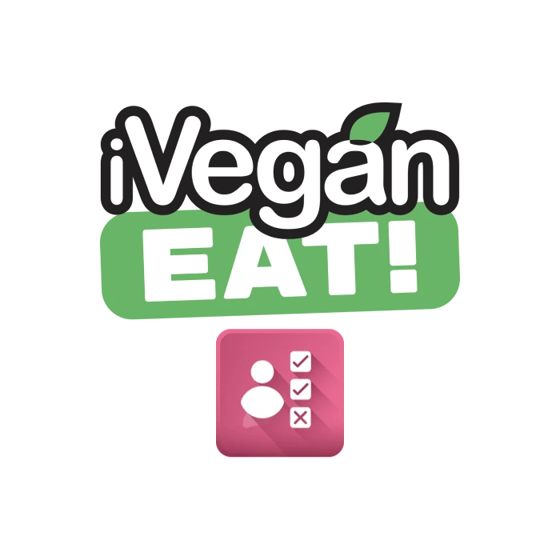
Testing & Validazione
Analisi post-prototipazione con utenti reali. Raccolta di feedback quantitativi e qualitativi per cicli di miglioramento continuo del prodotto.
Analisi FeedbackHai un progetto in mente?
Sia che si tratti di un'interfaccia complessa da progettare o di un'idea da sviluppare da zero, parliamone.
Avvia una collaborazione